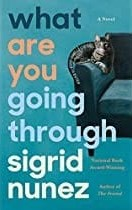

BookSHELL
HOME
MY ACCOUNT
CATEGORIES
The Best Of The Bunch
Top Rated
Fiction
Non-Fiction
Romance
SEARCH
WHAT ARE YOU GOING THROUGH

What Are You Going Through:
Summary of the Book:
“It takes something more than intelligence to be able to write intelligently. . . Whatever it is, Sigrid Nunez has it. When I open one of her novels, I almost always know immediately: This is where I want to be . . . [What Are You Going Through is] as good as The Friend, if not better.” —The New York Times “Emotionally intense and impossible to put down, this intimate novel about a woman asked to help a terminally ill friend end her life is leavened with wit and tenderness.”—People Its frank confrontation of bleak realities is exactly what energizes it. . .The result is a book as luminous as it is deep and as slippery as it is firmly grounded. As its narrator observes, “[N]o matter how sad, a beautifully told story lifts you up.” What Are You Going Through is as beautifully told as they come.”—Seattle Times
5.3
Aggregated Ratings
Compare Price And Buy
Amazon Rs.1765
BUY
Flipkart Rs.2,000
BUY